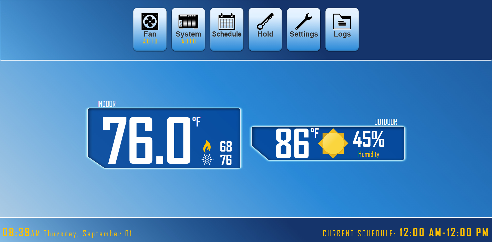
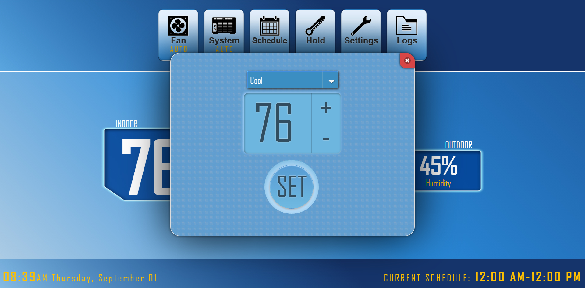
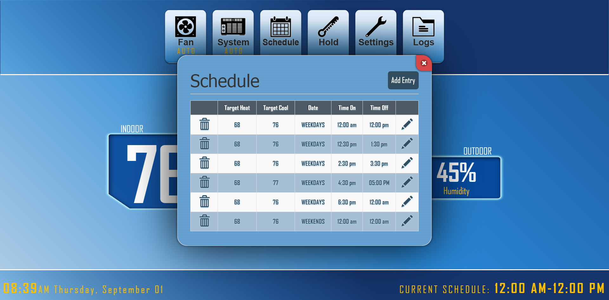
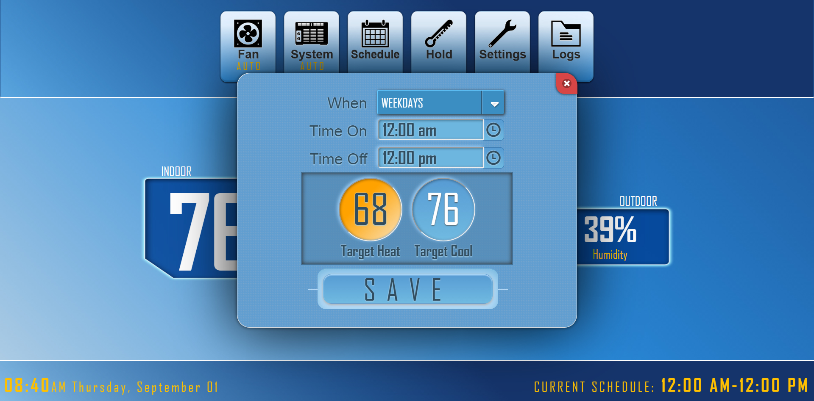
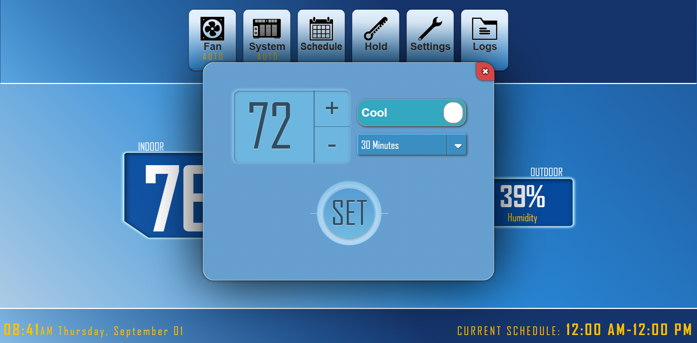
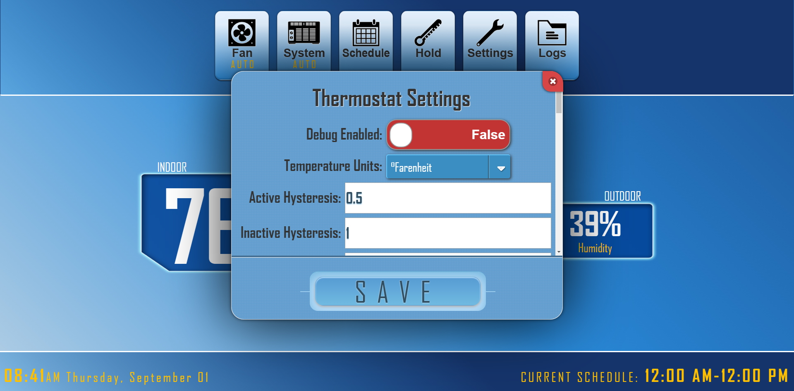
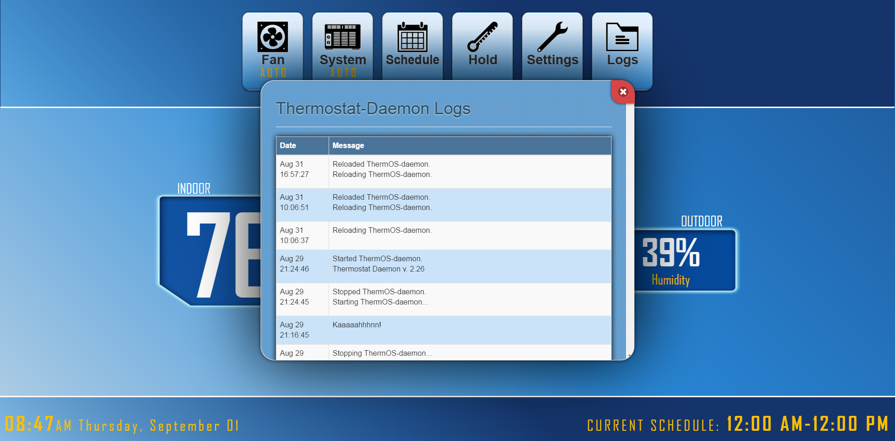
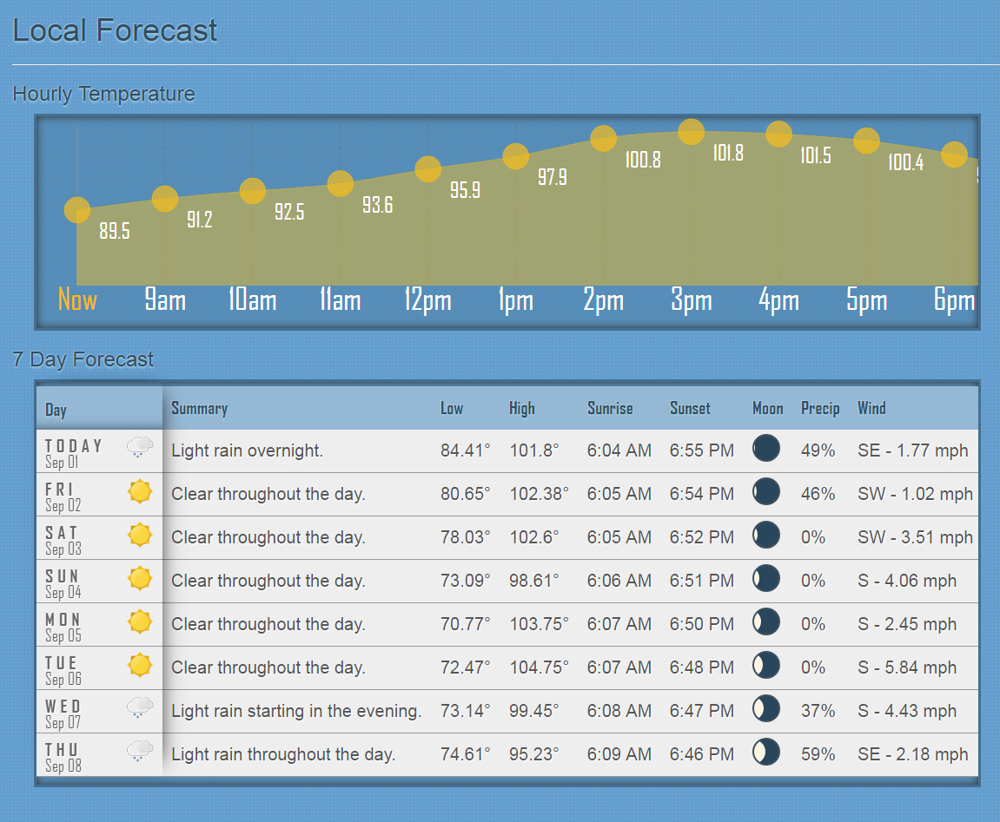

What is ThermOS?
ThermOS transforms your Raspberry Pi into a web enabled thermostat. You can fine-tune your thermostat settings to get the most out of your system. Currently, ThermOS is divided into two parts; the thermostat-daemon, which handles your ac system, and thermostat-web, which gives you a beautifully simplistic web interface to interact with.
What can ThermOS do?
Access the control panel through any web enabled device that is connected to the same network.
- Set your system to Heat, Cool, or Auto
- With Auto mode enabled, you can create a custom runtime schedule
- Temporarily override scheduled settings with the temperature hold timer
- View thermostat logs right in the control panel
- Access real-time hyper-localized weather data provided by the Dark Sky API
- 
- 
- 
- 
- 
- 
- 
Control Panel
System Panel
Schedule Form
Schedule Edit
Hold Temp
Settings Panel
System Logs
Personalized Weather
Setup Instructions